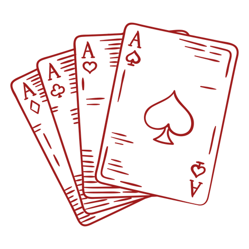

Boas-vindas ao
Clash of Legends

Manual de Instruções
Objetivo:
O objetivo do jogo é reduzir os Pontos de Vida do oponente a zero, utilizando a
invocação de personagens históricos e ativação de suporte.
Configurando o jogo:
- JOGADORES: Dois jogadores;
- CARTAS: Cada jogador deve construir um baralho contendo entre 5 a 10 cartas.
Campo de batalha:
- ÁREA DE INVOCAÇÃO: Local onde os jogadores colocam suas cartas de
personagens;
- ÁREA DE SUPORTE: Local reservado para ativação de suporte;
- DECK PRINCIPAL: Baralho de onde os jogadores compram suas cartas;
- CEMITÉRIO: área onde vão as cartas destruidas ou descartadas são coolocadas.
Tipos de cartas:
CARTAS DE PERSONAGENS: Personagens que podem se invocadas para atacar e
defender.
- NÍVEL: Os personagens tem niveis de 1 a ??. Criaturas de 1 a ? podem ser
invocadas normalmente, enquanto as de ? ou superior exigem sacrificios;
- ATRIBUTOS: Os personagens possuem atributos como Ataque e Defesa,
além de habilidades especiais.
- CARTAS DE SUPORTE: São cartas que podem ser ativados durante o seu turno para
causar feitiço imediatos ou temporarios.
- SUPORTE NORMAL: Suporte que são ativados e resolvidos imediatamente;
- SUPORTE CONTÍNUO: Permanecem no campo e produzem dano continuo durante o jogo;
- SUPORTE DE CAMPO: Afetam o campo de batalha e podem e podem impactar ambos os jogadores.
Pontos de vida:
- O jogador começa o jogo com 5000 Pontos de Vida. O objetivo é reduzir os
Pontos de Vida do oponente a zero.
O primeiro jogador a atingir essa meta é declarado vencedor.
Fases do turno:
Cada turno é dividido nas seguintes fases:
- FASE DE COMPRA: O jogador compra uma carta do baralho;
- FASE PRINCIPAL: O jogador pode invocar personagens, e ativar suporte no camp de batalha;
- FASE DE BATALHA: O jogador pode atacar os personagens do oponente ou, se possivel,
atacar diretamente os Pontos de Vida do oponente;
- FASE PRINCIPAL: Após a fase de batalha, o jogador pode realizar outras invocações ou ativações;
- FASE FINAL: Encerramento do turno e passagem da vez para o oponente.
Invocação de personagens:
- INVOCAÇÃO NORMAL: Uma criatura de nível baixo até o mais alto pode ser invocada uma vez por turno sem sacrifício.
- INVOCAÇÃO COM SACRIFICIO: Para invocar uma criatura de nível 5 ou 6, o jogador deve sacrificar uma
criatura que esteja no campo.
Criaturas de nível 7 a 12 exigem o sacrifício de duas criaturas.
- INVOCAÇÃO ESPECIAL: Algumas cartas permitem invocações especiais, sem necessidade de sacrifícios.
Combate:
- ATAQUE DIRETO: Se o oponente não tiver personagens em seu campo de batalha,
o jogador pode atacar diretamente os Pontos de Vida do adversário.
- BATALHA DE PERSONAGENS: Quando um personagem ataca uma criatura adversária, os valores de Ataque e
Defesa são comparados:
- 1º Se o ATK do personagem atacante for maior que o ATK ou DEF do personagem defendida,
o personagem do oponente é destruída e a diferença entre os valores é subtraída dos Pontos de Vida do
oponente,
se o personagem estivesse em modo de ataque.
2º Se o ATK do personagem do oponente for maior ou igual ao ATK do personagem atacante, o personagem
atacante
é destruída,
e a diferença, se houver, é subtraída dos Pontos de Vida do jogador atacante.
Cartas do Clash of Legends